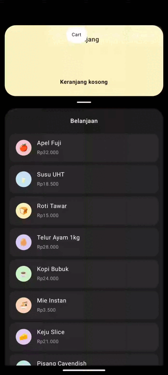
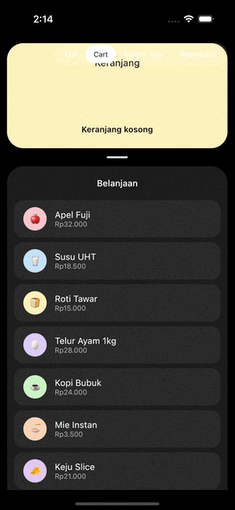

Transfer: list item → card¶


Wrap the screen in a GooeyTransferHost, mark each source row with GooeySource, and give the
target card a GooeyTarget. Tapping (or long-press-dragging) a source transfers its token into the
target, with a gooey bridge connecting the two while it travels.
Quick start¶
val state = rememberGooeyTransferState()
GooeyTransferHost(state = state) {
Column {
GooeyTarget(state = state, cornerRadius = 28.dp) {
TransferredTokens()
}
LazyColumn {
items(friends, key = { it.id }) { friend ->
GooeySource(
state = state,
key = friend.id,
color = friend.tint,
cornerRadius = 16.dp,
token = { Avatar(friend) },
) {
FriendRow(friend, avatarModifier = Modifier.tokenAnchor())
}
}
}
}
}
tokenAnchor() marks where inside the row the flying copy visually starts from.
Four moving parts, always used together:
rememberGooeyTransferState()— one state object per screen/host.GooeyTransferHost(state) { ... }— draws the gooey overlay and in-flight tokens above everything inside it; sources and targets can live anywhere inside, including inside aLazyColumn.GooeySource(state, key, color, token) { content }— a row/card whosetokenflies into the target when tapped (or dragged).GooeyTarget(state) { TransferredTokens() }— the destination;TransferredTokens()renders the row of tokens that have arrived.
How the state works¶
GooeyTransferState is a bit more involved than the nav indicator / segmented control states,
because it's coordinating several sources, one target, and (optionally) an in-progress drag —
but the underlying idea is the same: the state only holds data and runs animations; your UI
decides when things happen.
rememberGooeyTransferState()creates oneGooeyTransferStateshared by everyGooeySourceand theGooeyTargetinside the sameGooeyTransferHost.- Every
GooeySourceregisters itself with the state (keyed by thekeyyou pass) as soon as it enters composition, and unregisters when it leaves — this is what makes it safe to put sources inside aLazyColumn: a row that's scrolled off-screen is simply not registered until it's recomposed again. - Tapping a source calls
state.transfer(key)internally (bound to.clickablefor you) — you don't normally call this yourself unless you're triggering a transfer from somewhere other than a tap, e.g. a button elsewhere on screen. - While a token is flying, it's tracked as a
TransferredItemwith its own progress animation.GooeyTransferHostreads every in-flight item's progress each frame to build the blob shapes (source blob, bridge, target blob) and to position the actual flyingtokencomposable on top. - Once progress reaches
1f, the token "lands" —GooeyTarget'sTransferredTokens()then draws it as a resting token in its row. - Dragging (long-press and drag, enabled by default) runs a separate
DragSession: the token follows your finger with a gooey "neck" stretching back to the source, and on release the state decides whether to commit the transfer or spring back, based on how close to the target you let go and how fast you were moving (FlingVelocity).
State you can read and call yourself¶
| Member | What it does |
|---|---|
state.transfer(key) |
Starts (or resumes) moving a source's token into the target. Normally called for you by tapping a GooeySource. |
state.returnToSource(key) |
Animates a resting token back out of the target to its source, then removes it. Wired to tapping a token in TransferredTokens() when removable = true (the default). |
state.remove(key) |
Removes a token from the target instantly, with no animation — use this for things like "clear all" or restoring saved state without replaying the transfer. |
state.isTransferred(key) |
true once that key has landed in the target. Useful for dimming/disabling a source row (this already happens automatically — see below). |
state.transferredKeys |
The current target contents, newest first — read this to know what's "in the cart" right now. |
state.isAnimating |
true while anything (a drag or a flight) is in progress — handy to disable other interactions mid-animation. |
Note that GooeySource already dims itself (transferredAlpha) and disables its own tap/drag
once its key is transferred, using state.isTransferred(key) internally — you don't need to wire
that up by hand.
Customizing the colors¶
Each GooeySource has its own color — this is what makes a per-item tint possible (e.g. one
color per friend, per product, per category), unlike the nav indicator/segmented control which
take one shared color for the whole host:
GooeySource(
state = state,
key = friend.id,
color = friend.tint, // any androidx.compose.ui.graphics.Color, per item
cornerRadius = 16.dp,
token = { Avatar(friend) },
) { FriendRow(friend, avatarModifier = Modifier.tokenAnchor()) }
Two more parameters control how color is used, both on GooeyTransferHost:
maxTintAlpha(default0.55f) — how strongly the bridge/blob tints towardcolorat its most intense point mid-flight. Lower it for a more subtle, mostly-white bridge.- On
GooeySource,transferredAlpha(default0.45f) — the opacity the source row fades to once its token has been transferred, so it reads as "already added" without disappearing.
GooeyTransferHost(state = state, maxTintAlpha = 0.3f) { /* ... */ }
A per-item color is also simplest way to make sure the flying token and the row it came from read
as "the same object" — pick it from your data (as friend.tint does above) or from your theme,
e.g. MaterialTheme.colorScheme.primary.
Changing the token / icon¶
token is a plain @Composable () -> Unit — there's no special "icon" API. It's used in two
places automatically: as the flying copy while in transit, and as the resting item inside
TransferredTokens(). Swap it for anything of a similar aspect ratio — an avatar, a product
thumbnail, an emoji, or a Material icon:
import androidx.compose.material.icons.Icons
import androidx.compose.material.icons.filled.Star
import androidx.compose.material3.Icon
GooeySource(
state = state,
key = product.id,
color = product.tint,
token = {
Icon(
imageVector = Icons.Filled.Star,
contentDescription = product.name,
tint = Color.Black,
)
},
) { ProductRow(product) }
Reactify doesn't ship icons itself — add
org.jetbrains.compose.material:material-icons-extended (Compose Multiplatform) or
androidx.compose.material:material-icons-extended (Android-only) to your own app module if you
want Material icons instead of emoji/avatars.
Two details that matter when swapping token:
- Whatever you put in
tokenis measured at the source row's size the first time it's drawn, then scaled as it flies — so keep it roughly square (like an avatar or icon) rather than a wide piece of text, or it will stretch oddly mid-flight. Modifier.tokenAnchor(), applied inside the source'scontent, marks exactly where the flying copy visually starts from (e.g. right on top of a small avatar inside a bigger row) — omit it and the whole row's bounds are used as the starting point instead.
TransferredTokens() itself (called inside GooeyTarget) takes its own styling parameters:
TransferredTokens(
tokenSize = 32.dp, // size each resting token is drawn at
spacing = 6.dp, // gap between resting tokens
removable = true, // tap a resting token to send it back to its source
)
Pairing with a notch shape¶
Pair the target with a GooeyNotchShape to make the card's background open a matching notch as
tokens arrive — this is what makes the card look like it's "swallowing" the token:
val notchRadius by animateDpAsState(if (collapsed) 30.dp else 0.dp)
GooeyTarget(
state = state,
cornerRadius = 28.dp,
notchRadius = notchRadius,
modifier = Modifier.background(CardYellow, GooeyNotchShape(cornerRadius = 28.dp, notchRadius = notchRadius)),
) {
TransferredTokens()
}
notchRadius must be passed to both places — GooeyTarget (so the gooey overlay bends around
the notch) and GooeyNotchShape (so the background actually has a matching concave cutout) — and
cornerRadius must match between them too. Animate notchRadius yourself (as above, with
animateDpAsState or a spring); the shape and overlay just follow whatever value you give them.
Tap vs. drag¶
Both are enabled by default on every GooeySource:
- Tap always transfers the token immediately.
- Long-press, then drag picks the token up and follows your finger, stretching a gooey neck
back to the source; releasing it near the target (or flinging it towards the target fast enough)
commits the transfer, otherwise it springs back. The long-press requirement keeps this from
fighting with scrolling in a
LazyColumn.
Disable drag (keep tap-to-transfer only) with dragEnabled = false, or disable both interactions
with enabled = false (e.g. while something else is loading).
Parameters reference¶
rememberGooeyTransferState
| Parameter | Default | Description |
|---|---|---|
animationSpec |
tween(1100ms, LinearEasing) |
Drives the master flight progress (0→1). Keep it linear — the grow/stretch/pinch shape itself is already baked into the choreography, not into easing. |
GooeyTransferHost
| Parameter | Default | Description |
|---|---|---|
state |
— | The shared GooeyTransferState. |
renderer |
GooeyRenderers.auto() |
See Choosing a Renderer. |
smoothness |
24.dp |
How far the gooey blend reaches around the bridge/blobs. |
maxTintAlpha |
0.55f |
Maximum tint intensity of the bridge/blob toward the source's color. |
GooeySource
| Parameter | Default | Description |
|---|---|---|
key |
— | Identifies this source; must be stable and unique (e.g. an id), same idea as LazyColumn's key. |
color |
— | Tint for this source's gooey overlay. |
token |
— | The flying/resting content — see "Changing the token / icon" above. |
cornerRadius |
16.dp |
Must match the visual corner radius of content's background, or the blob won't line up with the row. |
enabled |
true |
Disables both tap and drag when false. |
dragEnabled |
true |
Disables long-press-drag while keeping tap-to-transfer. |
transferredAlpha |
0.45f |
Opacity the row fades to once transferred. |
GooeyTarget
| Parameter | Default | Description |
|---|---|---|
cornerRadius |
16.dp |
Must match the visual corner radius of content's background. |
notchRadius |
0.dp |
Current radius of a paired GooeyNotchShape notch, if any — see "Pairing with a notch shape". |
Tips & troubleshooting¶
Tokens don't fly anywhere
GooeyTransferHost must be an ancestor of both the GooeySources and the GooeyTarget — it's
the thing that actually draws the overlay. A GooeySource or GooeyTarget outside the host has
nowhere to render into.
The flying token is squashed or stretched oddly
Give token a roughly square aspect ratio, and double-check cornerRadius on GooeySource /
GooeyTarget matches the real corner radius of your row/card backgrounds — a mismatch here is
the most common cause of the blob looking visually "off" from the content underneath it.
A transfer started before a row scrolled off-screen looks wrong when it lands
This is expected to self-correct: in-flight transfers re-read the source's live bounds each frame, so they follow the row while it's still composed; once it scrolls away, the last known bounds are used for the rest of the flight, and landing always targets the target's current bounds, which doesn't move.